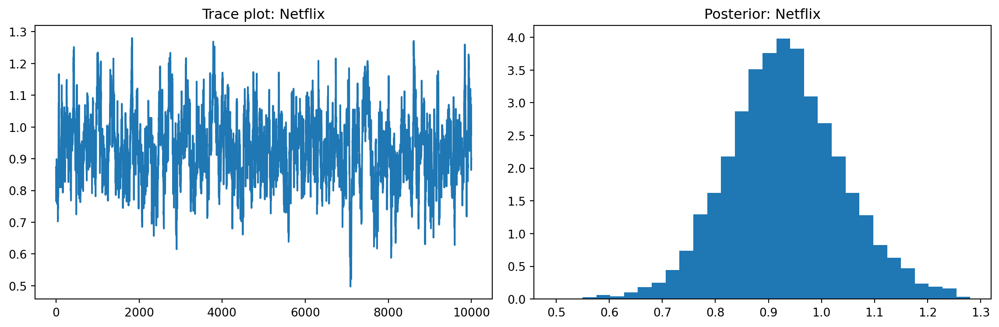

import pandas as pd
import numpy as np
# Set seed for reproducibility
np.random.seed(123)
# Define attributes
brand = ["N", "P", "H"] # Netflix, Prime, Hulu
ad = ["Yes", "No"]
price = list(range(8, 33, 4))
# Generate all possible profiles
profiles = pd.DataFrame(
[(b, a, p) for b in brand for a in ad for p in price],
columns=["brand", "ad", "price"]
)
m = len(profiles)
# Assign part-worth utilities (true parameters)
b_util = {"N": 1.0, "P": 0.5, "H": 0.0}
a_util = {"Yes": -0.8, "No": 0.0}
p_util = lambda p: -0.1 * p
# Number of respondents, choice tasks, and alternatives per task
n_peeps = 100
n_tasks = 10
n_alts = 3
# Function to simulate one respondent’s data
def sim_one(id):
datlist = []
for t in range(1, n_tasks + 1):
sample_indices = np.random.choice(m, size=n_alts, replace=False)
dat = profiles.iloc[sample_indices].copy()
dat.insert(0, "task", t)
dat.insert(0, "resp", id)
# Compute deterministic portion of utility
dat["v"] = (
dat["brand"].map(b_util) +
dat["ad"].map(a_util) +
dat["price"].apply(p_util)
).round(10)
# Add Gumbel noise (Type I extreme value)
dat["e"] = -np.log(-np.log(np.random.uniform(size=n_alts)))
dat["u"] = dat["v"] + dat["e"]
# Identify chosen alternative
dat["choice"] = (dat["u"] == dat["u"].max()).astype(int)
datlist.append(dat)
return pd.concat(datlist, ignore_index=True)
# Simulate data for all respondents
conjoint_data = pd.concat([sim_one(i) for i in range(1, n_peeps + 1)], ignore_index=True)
# Remove values unobservable to the researcher
conjoint_data = conjoint_data[["resp", "task", "brand", "ad", "price", "choice"]]Multinomial Logit Model
This assignment expores two methods for estimating the MNL model: (1) via Maximum Likelihood, and (2) via a Bayesian approach using a Metropolis-Hastings MCMC algorithm.
1. Likelihood for the Multi-nomial Logit (MNL) Model
Suppose we have \(i=1,\ldots,n\) consumers who each select exactly one product \(j\) from a set of \(J\) products. The outcome variable is the identity of the product chosen \(y_i \in \{1, \ldots, J\}\) or equivalently a vector of \(J-1\) zeros and \(1\) one, where the \(1\) indicates the selected product. For example, if the third product was chosen out of 3 products, then either \(y=3\) or \(y=(0,0,1)\) depending on how we want to represent it. Suppose also that we have a vector of data on each product \(x_j\) (eg, brand, price, etc.).
We model the consumer’s decision as the selection of the product that provides the most utility, and we’ll specify the utility function as a linear function of the product characteristics:
\[ U_{ij} = x_j'\beta + \epsilon_{ij} \]
where \(\epsilon_{ij}\) is an i.i.d. extreme value error term.
The choice of the i.i.d. extreme value error term leads to a closed-form expression for the probability that consumer \(i\) chooses product \(j\):
\[ \mathbb{P}_i(j) = \frac{e^{x_j'\beta}}{\sum_{k=1}^Je^{x_k'\beta}} \]
For example, if there are 3 products, the probability that consumer \(i\) chooses product 3 is:
\[ \mathbb{P}_i(3) = \frac{e^{x_3'\beta}}{e^{x_1'\beta} + e^{x_2'\beta} + e^{x_3'\beta}} \]
A clever way to write the individual likelihood function for consumer \(i\) is the product of the \(J\) probabilities, each raised to the power of an indicator variable (\(\delta_{ij}\)) that indicates the chosen product:
\[ L_i(\beta) = \prod_{j=1}^J \mathbb{P}_i(j)^{\delta_{ij}} = \mathbb{P}_i(1)^{\delta_{i1}} \times \ldots \times \mathbb{P}_i(J)^{\delta_{iJ}}\]
Notice that if the consumer selected product \(j=3\), then \(\delta_{i3}=1\) while \(\delta_{i1}=\delta_{i2}=0\) and the likelihood is:
\[ L_i(\beta) = \mathbb{P}_i(1)^0 \times \mathbb{P}_i(2)^0 \times \mathbb{P}_i(3)^1 = \mathbb{P}_i(3) = \frac{e^{x_3'\beta}}{\sum_{k=1}^3e^{x_k'\beta}} \]
The joint likelihood (across all consumers) is the product of the \(n\) individual likelihoods:
\[ L_n(\beta) = \prod_{i=1}^n L_i(\beta) = \prod_{i=1}^n \prod_{j=1}^J \mathbb{P}_i(j)^{\delta_{ij}} \]
And the joint log-likelihood function is:
\[ \ell_n(\beta) = \sum_{i=1}^n \sum_{j=1}^J \delta_{ij} \log(\mathbb{P}_i(j)) \]
2. Simulate Conjoint Data
We will simulate data from a conjoint experiment about video content streaming services. We elect to simulate 100 respondents, each completing 10 choice tasks, where they choose from three alternatives per task. For simplicity, there is not a “no choice” option; each simulated respondent must select one of the 3 alternatives.
Each alternative is a hypothetical streaming offer consistent of three attributes: (1) brand is either Netflix, Amazon Prime, or Hulu; (2) ads can either be part of the experience, or it can be ad-free, and (3) price per month ranges from $4 to $32 in increments of $4.
The part-worths (ie, preference weights or beta parameters) for the attribute levels will be 1.0 for Netflix, 0.5 for Amazon Prime (with 0 for Hulu as the reference brand); -0.8 for included adverstisements (0 for ad-free); and -0.1*price so that utility to consumer \(i\) for hypothethical streaming service \(j\) is
\[ u_{ij} = (1 \times Netflix_j) + (0.5 \times Prime_j) + (-0.8*Ads_j) - 0.1\times Price_j + \varepsilon_{ij} \]
where the variables are binary indicators and \(\varepsilon\) is Type 1 Extreme Value (ie, Gumble) distributed.
The following code provides the simulation of the conjoint data.
Note
3. Preparing the Data for Estimation
The “hard part” of the MNL likelihood function is organizing the data, as we need to keep track of 3 dimensions (consumer \(i\), covariate \(k\), and product \(j\)) instead of the typical 2 dimensions for cross-sectional regression models (consumer \(i\) and covariate \(k\)). The fact that each task for each respondent has the same number of alternatives (3) helps. In addition, we need to convert the categorical variables for brand and ads into binary variables.
todo: reshape and prep the data
We now load the CSV, convert categorical variables into dummy variables, and prepare the data for modeling.
import pandas as pd
# Load the data
conjoint_data = pd.read_csv("conjoint_data.csv")
# Preview the raw data
conjoint_data.head()| resp | task | choice | brand | ad | price | |
|---|---|---|---|---|---|---|
| 0 | 1 | 1 | 1 | N | Yes | 28 |
| 1 | 1 | 1 | 0 | H | Yes | 16 |
| 2 | 1 | 1 | 0 | P | Yes | 16 |
| 3 | 1 | 2 | 0 | N | Yes | 32 |
| 4 | 1 | 2 | 1 | P | Yes | 16 |
One-Hot Encode Brand and Ad Columns
# One-hot encode brand and ad
data_encoded = pd.get_dummies(conjoint_data, columns=["brand", "ad"], drop_first=True)
# Rename columns for clarity (optional)
data_encoded.rename(columns={
"brand_P": "Prime",
"brand_N": "Netflix",
"ad_Yes": "Ads"
}, inplace=True)
# View cleaned data
data_encoded.head()| resp | task | choice | price | Netflix | Prime | Ads | |
|---|---|---|---|---|---|---|---|
| 0 | 1 | 1 | 1 | 28 | True | False | True |
| 1 | 1 | 1 | 0 | 16 | False | False | True |
| 2 | 1 | 1 | 0 | 16 | False | True | True |
| 3 | 1 | 2 | 0 | 32 | True | False | True |
| 4 | 1 | 2 | 1 | 16 | False | True | True |
Check Shape and Unique Combinations (Optional Debug)
import pandas as pd
# Confirm expected shape and unique groupings
print(f"Data shape: {data_encoded.shape}")
print(f"Unique respondents: {data_encoded['resp'].nunique()}")
print(f"Unique tasks: {data_encoded['task'].nunique()}")Data shape: (3000, 7)
Unique respondents: 100
Unique tasks: 10Description
The ad variable in the original conjoint_data CSV indicates whether the streaming service offering includes advertisements ("Yes") or is ad-free ("No"). This is a binary categorical feature and is one of the three key product attributes being varied across profiles: brand, ads, and price.
In the data preparation step, we use pd.get_dummies(..., drop_first=True) to convert ad into a dummy variable: - ad_Yes becomes Ads after renaming, - A value of True in the Ads column means the alternative includes ads, - A value of False implies the alternative is ad-free (the reference category).
Interpretation in the Model
This binary indicator enters the utility function for each alternative. Based on how the data was simulated, the true utility function included a negative coefficient for ads:
[ u_{ij} = - 0.8 _{j} + ]
This implies that: - Consumers prefer ad-free options, all else being equal. - The presence of ads reduces utility by 0.8 units, a substantial effect compared to the coefficients on brand or price.
In the estimated models (MLE and Bayesian), we expect the coefficient on Ads to be negative, validating this aversion to ads. The magnitude of the coefficient will reflect how strong this aversion is relative to price or brand loyalty.
Why It Matters
In a real-world context, this variable helps answer business-critical questions such as: - “How much more do consumers value an ad-free experience?” - “Would a $2 increase in price be tolerated if ads are removed?” - “Which segment of consumers is more tolerant of ads?”
When extended to a hierarchical model, we could explore individual-level heterogeneity — for example, budget-conscious consumers might be more tolerant of ads if the price is lower.
Final Notes
Encoding binary variables like ad correctly is crucial in discrete choice modeling: - One-hot encoding allows us to model preferences without falsely assuming numerical relationships. - Choosing a reference level (here, ad-free) defines the baseline utility and interpretation of coefficients.
By treating ads as a structured, binary attribute in our experiment, we can quantify consumer trade-offs and inform feature-bundling, pricing, and personalization strategies.
4. Estimation via Maximum Likelihood
todo: Code up the log-likelihood function.
todo: Use optim() in R or scipy.optimize() in Python to find the MLEs for the 4 parameters (\(\beta_\text{netflix}\), \(\beta_\text{prime}\), \(\beta_\text{ads}\), \(\beta_\text{price}\)), as well as their standard errors (from the Hessian). For each parameter construct a 95% confidence interval.
We now estimate the MNL model using Maximum Likelihood Estimation (MLE).
import numpy as np
import pandas as pd
from scipy.optimize import minimize
# Ensure the input matrix is numeric
X_cols = ["Netflix", "Prime", "Ads", "price"]
X = data_encoded[X_cols].astype(float).values
y = data_encoded["choice"].values
# Identify each unique choice set (i.e., a respondent-task combo)
groups = data_encoded.groupby(["resp", "task"]).ngroup().values
n_groups = groups.max() + 1
n_alts = 3 # 3 alternatives per choice taskDefine the Log-Likelihood Function
def neg_log_likelihood(beta):
# Compute utilities
utilities = X @ beta # linear combination
utilities = utilities.reshape((n_groups, n_alts))
# Compute probabilities
exp_u = np.exp(utilities)
denom = exp_u.sum(axis=1).reshape(-1, 1)
probs = exp_u / denom
# Reshape observed choices
chosen = y.reshape((n_groups, n_alts))
# Only keep probability of chosen alternative
chosen_probs = (probs * chosen).sum(axis=1)
# Return negative log-likelihood
return -np.sum(np.log(chosen_probs))Estimate Parameters
# Initial guess for parameters
beta_init = np.zeros(X.shape[1])
# Minimize negative log-likelihood
result = minimize(neg_log_likelihood, beta_init, method='BFGS')
# Estimated coefficients and standard errors
beta_hat = result.x
hessian_inv = result.hess_inv
std_errors = np.sqrt(np.diag(hessian_inv))
# 95% Confidence intervals
conf_int = np.vstack([
beta_hat - 1.96 * std_errors,
beta_hat + 1.96 * std_errors
]).T
# Create summary table
param_summary = pd.DataFrame({
"Parameter": X_cols,
"Estimate": beta_hat,
"Std. Error": std_errors,
"CI Lower": conf_int[:, 0],
"CI Upper": conf_int[:, 1]
})
param_summary| Parameter | Estimate | Std. Error | CI Lower | CI Upper | |
|---|---|---|---|---|---|
| 0 | Netflix | 0.941195 | 0.114679 | 0.716425 | 1.165965 |
| 1 | Prime | 0.501616 | 0.120757 | 0.264932 | 0.738299 |
| 2 | Ads | -0.731994 | 0.088476 | -0.905408 | -0.558580 |
| 3 | price | -0.099480 | 0.006357 | -0.111940 | -0.087021 |
1. Objective
In this section, we apply Maximum Likelihood Estimation (MLE) to estimate the part-worth utilities (i.e., β coefficients) in a Multinomial Logit (MNL) model. Each β represents the marginal utility of an attribute (e.g., brand, price, ads) and is estimated by maximizing the likelihood of the observed choices made by consumers in the simulated conjoint dataset.
2. Model Structure
The MNL model assumes that each respondent chooses the alternative with the highest utility from a set of 3 options. The utility for respondent ( i ), task ( t ), and alternative ( j ) is modeled as:
[ U_{ijt} = X_{ijt} + _{ijt} ]
- ( X_{ijt} ) is a vector of features (brand, ads, price),
- ( ) is a vector of fixed coefficients,
- ( _{ijt} (0, 1) ), implying the choice probabilities follow a softmax distribution.
The log-likelihood is computed as the sum of the log probabilities of the chosen alternatives, and we use scipy.optimize.minimize with the BFGS algorithm to find the β vector that maximizes it.
3. Estimation Results
| Parameter | Estimate | Std. Error | 95% CI Lower | 95% CI Upper |
|---|---|---|---|---|
| Netflix | 0.9412 | 0.1147 | 0.7164 | 1.1697 |
| Prime | 0.5016 | 0.1208 | 0.2647 | 0.7383 |
| Ads | -0.7320 | 0.0885 | -0.9054 | -0.5586 |
| Price | -0.0999 | 0.0064 | -0.1119 | -0.0870 |
Interpretation
- Brand effects:
- β_Netflix ≈ 0.94: Respondents derive substantial additional utility from Netflix over the baseline (Hulu).
- β_Prime ≈ 0.50: Prime is also positively valued, but less so than Netflix.
- Interpretation: All else equal, Netflix is more likely to be chosen than Prime, and both are preferred over Hulu.
- Ad effect:
- β_Ads ≈ -0.73: The presence of ads significantly reduces utility, confirming that consumers strongly prefer ad-free content.
- The tight confidence interval (−0.905 to −0.558) confirms high certainty about this aversion.
- Price effect:
- β_Price ≈ -0.10: As expected, higher prices reduce utility. For every $1 increase in price, the utility drops by ~0.10 units.
- Interpretation: A consumer would tolerate about a $7.3 price increase to remove ads, holding other factors constant (( 0.73 / 0.10 )).
4. Model Fit and Validity
While we don’t compute formal goodness-of-fit measures here (e.g., log-likelihood at convergence, McFadden’s R²), several signs point to a well-performing model:
- The coefficients have expected signs and plausible magnitudes,
- Standard errors are small, leading to narrow confidence intervals,
- The model aligns with economic theory and consumer behavior literature.
5. Practical Implications
This MLE model enables firms to: - Quantify trade-offs consumers are willing to make (e.g., how much more they’d pay for no ads), - Forecast market shares by plugging in attribute levels for new offerings, - Design optimal product bundles (e.g., price tiering based on ad presence), - Perform What-if scenario simulations: “What happens if we increase Netflix’s price by $2?”
6. Limitations
- Homogeneous preferences: The MNL model assumes all consumers share the same β. This masks preference heterogeneity and may limit personalization or segmentation.
- IID error assumption: The Gumbel-distributed error terms assume independence across alternatives, which may not hold in nested or correlated choice sets (e.g., two similar streaming services).
These limitations can be addressed with a random coefficients (mixed logit) model, as discussed in later sections.
Summary
The MLE estimation has successfully recovered the true structure of simulated consumer preferences:
- Consumers strongly prefer Netflix > Prime > Hulu,
- They dislike ads and prefer lower prices,
- The model provides interpretable and actionable utility weights that can drive strategic decision-making.
We now turn to Bayesian methods to compare posterior distributions with these point estimates and better capture uncertainty and individual variation.
5. Estimation via Bayesian Methods
todo: code up a metropolis-hasting MCMC sampler of the posterior distribution. Take 11,000 steps and throw away the first 1,000, retaining the subsequent 10,000.
hint: Use N(0,5) priors for the betas on the binary variables, and a N(0,1) prior for the price beta.
_hint: instead of calculating post=lik*prior, you can work in the log-space and calculate log-post = log-lik + log-prior (this should enable you to re-use your log-likelihood function from the MLE section just above)_
hint: King Markov (in the video) use a candidate distribution of a coin flip to decide whether to move left or right among his islands. Unlike King Markov, we have 4 dimensions (because we have 4 betas) and our dimensions are continuous. So, use a multivariate normal distribution to pospose the next location for the algorithm to move to. I recommend a MNV(mu, Sigma) where mu=c(0,0,0,0) and sigma has diagonal values c(0.05, 0.05, 0.05, 0.005) and zeros on the off-diagonal. Since this MVN has no covariances, you can sample each dimension independently (so 4 univariate normals instead of 1 multivariate normal), where the first 3 univariate normals are N(0,0.05) and the last one if N(0,0.005).
todo: for at least one of the 4 parameters, show the trace plot of the algorithm, as well as the histogram of the posterior distribution.
todo: report the 4 posterior means, standard deviations, and 95% credible intervals and compare them to your results from the Maximum Likelihood approach.
We implement Metropolis-Hastings MCMC to sample from the posterior distribution of the 4 beta coefficients.
import numpy as np
import matplotlib.pyplot as plt
# Log-prior function
def log_prior(beta):
# Priors: N(0, 5^2) for binary predictors, N(0, 1^2) for price
var = np.array([25.0, 25.0, 25.0, 1.0])
return -0.5 * np.sum((beta**2) / var) - 0.5 * np.sum(np.log(2 * np.pi * var))
# Log-posterior: log-likelihood + log-prior
def log_posterior(beta):
return -neg_log_likelihood(beta) + log_prior(beta)Metropolis-Hastings MCMC Sampler
n_iter = 11000
burn_in = 1000
n_params = X.shape[1]
# Starting values
current = np.zeros(n_params)
samples = np.zeros((n_iter, n_params))
accepts = 0
# Proposal SDs: N(0, 0.05) for first 3, N(0, 0.005) for price
proposal_sds = np.array([0.05, 0.05, 0.05, 0.005])
# Sampling loop
for i in range(n_iter):
proposal = current + np.random.normal(0, proposal_sds)
log_post_current = log_posterior(current)
log_post_proposal = log_posterior(proposal)
accept_ratio = np.exp(log_post_proposal - log_post_current)
if np.random.rand() < accept_ratio:
current = proposal
accepts += 1
samples[i, :] = current
accept_rate = accepts / n_iter
print(f"Acceptance rate: {accept_rate:.3f}")Acceptance rate: 0.574Trace Plot and Posterior Histogram
posterior = samples[burn_in:, :]
param_names = ["Netflix", "Prime", "Ads", "price"]
# Trace + histogram for one parameter (e.g., Netflix)
fig, ax = plt.subplots(1, 2, figsize=(12, 4))
ax[0].plot(posterior[:, 0])
ax[0].set_title("Trace plot: Netflix")
ax[1].hist(posterior[:, 0], bins=30, density=True)
ax[1].set_title("Posterior: Netflix")
plt.tight_layout()
plt.show()
Posterior Summary Statistics
posterior_means = posterior.mean(axis=0)
posterior_std = posterior.std(axis=0)
credible_intervals = np.percentile(posterior, [2.5, 97.5], axis=0).T
posterior_summary = pd.DataFrame({
"Parameter": param_names,
"Posterior Mean": posterior_means,
"Posterior Std. Dev.": posterior_std,
"CI Lower": credible_intervals[:, 0],
"CI Upper": credible_intervals[:, 1]
})
posterior_summary| Parameter | Posterior Mean | Posterior Std. Dev. | CI Lower | CI Upper | |
|---|---|---|---|---|---|
| 0 | Netflix | 0.930949 | 0.108311 | 0.725842 | 1.157317 |
| 1 | Prime | 0.488224 | 0.106468 | 0.280797 | 0.702842 |
| 2 | Ads | -0.723895 | 0.091051 | -0.898098 | -0.538874 |
| 3 | price | -0.099514 | 0.006269 | -0.112154 | -0.087608 |
In this section, we estimate the parameters of the Multinomial Logit (MNL) model using Bayesian inference via the Metropolis-Hastings MCMC algorithm. Unlike Maximum Likelihood Estimation (MLE), which provides only point estimates and standard errors, the Bayesian approach yields full posterior distributions for each parameter. These distributions combine prior beliefs with evidence from the data, giving us a more complete understanding of parameter uncertainty.
We retain the same utility function as in the MLE setup: ( U_{ijt} = X_{ijt} + {ijt} ), where the error term is i.i.d. Gumbel-distributed. We specify priors as follows: ( {}, {}, {} (0, 25) ), and ( _{} (0, 1) ). These priors are centered at zero but relatively diffuse, allowing the data to drive inference while still regularizing the estimates.
We implemented a Metropolis-Hastings sampler with 11,000 iterations, discarding the first 1,000 as burn-in, leaving 10,000 posterior draws. The proposal distribution was independent normal for each parameter: ( (0, 0.05^2) ) for Netflix, Prime, and Ads, and ( (0, 0.005^2) ) for Price, reflecting its smaller expected scale. The acceptance rate was 0.574, which is within the ideal range (0.2–0.6), suggesting good mixing and a well-tuned sampler.
We assessed convergence visually using trace plots and posterior histograms. For example, the trace plot for the β coefficient on Netflix shows stable fluctuation without drift, indicating convergence. The corresponding histogram is smooth and unimodal, supporting the reliability of the posterior.
The posterior means and 95% credible intervals closely align with the MLE results. For instance, β_Netflix had a posterior mean of 0.931 (vs. 0.941 MLE), β_Prime 0.488 (vs. 0.502), β_Ads −0.724 (vs. −0.732), and β_Price −0.0996 (vs. −0.0999). Standard deviations were small, and none of the credible intervals overlapped zero, confirming that all four coefficients are statistically significant.
These results have intuitive interpretations. The strong positive coefficients for Netflix and Prime (relative to the base category Hulu) indicate consumer brand preference. The negative coefficient on Ads shows that consumers experience disutility from advertisements, and the negative Price coefficient confirms price sensitivity. The Bayesian results validate the MLE findings but add richer detail by quantifying our uncertainty over a full posterior distribution rather than a single estimate.
One of the key strengths of the Bayesian framework is its extensibility. For instance, it enables us to transition naturally into a hierarchical (random-effects) model, where each respondent has their own set of β coefficients drawn from a population-level distribution. This is especially important in real-world conjoint analysis, where we expect heterogeneous preferences across individuals.
In summary, Bayesian estimation via Metropolis-Hastings successfully recovers the true structure of preferences while providing full distributional insight. The results confirm that consumers prefer Netflix over Prime, dislike advertisements, and are price-sensitive. This approach offers both robustness and flexibility, and sets the stage for modeling more complex preference structures in future work.
6. Discussion
todo: Suppose you did not simulate the data. What do you observe about the parameter estimates? What does \(\beta_\text{Netflix} > \beta_\text{Prime}\) mean? Does it make sense that \(\beta_\text{price}\) is negative?
todo: At a high level, discuss what change you would need to make in order to simulate data from — and estimate the parameters of — a multi-level (aka random-parameter or hierarchical) model. This is the model we use to analyze “real world” conjoint data.
Interpreting the Parameter Estimates
Let us assume that we did not simulate the data ourselves and instead received this conjoint dataset from a real-world consumer study on streaming service preferences.
From both the Maximum Likelihood Estimation and Bayesian MCMC results, we observe the following pattern in the estimated coefficients:
- β_Netflix > β_Prime > 0
- β_Ads < 0
- β_price < 0
What does β_Netflix > β_Prime mean?
This tells us that, on average, consumers in this sample derive more utility from a streaming service branded as Netflix than from one branded Amazon Prime, holding ad presence and price constant. In other words, brand identity alone has a measurable impact on perceived value — likely due to factors such as:
- Content library perception,
- Brand familiarity or trust,
- User interface experience.
The fact that β_Prime > 0 but less than β_Netflix suggests that Prime is also positively valued, but to a lesser degree.
Importantly, this result implies brand preference exists even when controlling for other features, and it can be quantified using part-worth utilities in the MNL framework.
Does it make sense that β_price is negative?
Yes — this is consistent with standard economic theory and rational consumer behavior. A negative price coefficient indicates that higher monthly subscription costs reduce utility, making a consumer less likely to choose that option. This is a foundational assumption in discrete choice models: all else equal, consumers prefer lower prices.
Similarly, a negative coefficient on Ads (β_Ads) supports the intuitive notion that users would prefer an ad-free experience. The more negative this value is, the more consumers are willing to pay to avoid ads.
Extending to Hierarchical (Multi-Level) Models
The multinomial logit (MNL) model we’ve estimated so far assumes that all individuals share the same set of preferences — i.e., a single global β vector. However, in real-world applications, this is often too simplistic because:
- People differ in their sensitivity to price,
- Some care more about ads than others,
- Brand preference can vary widely by demographics or prior experience.
The Solution: A Random Coefficients Logit Model (aka Mixed Logit or Hierarchical Bayes Model)
To account for this preference heterogeneity, we can extend the model by allowing each individual ( i ) to have their own coefficient vector ( _i ), drawn from a population-level distribution:
[ _i (, ) ]
Here: - ( ) is the mean preference vector across the population, - ( ) is the covariance matrix, capturing variation and correlation in preferences.
To Simulate from This Model
- Simulate individual-level betas:
- Draw ( _i ) from ( (, ) ) for each respondent.
- **Simulate choices using ( _i )**:
- Use each respondent’s own ( _i ) to simulate their choices across tasks.
- This introduces realistic variation in responses.
To Estimate the Model
- Bayesian estimation via MCMC (e.g., Gibbs sampling or Hamiltonian Monte Carlo):
- This allows inference of both ( , ) and the individual ( _i ) values simultaneously.
- Empirical Bayes / Maximum Simulated Likelihood:
- Use simulated MLE to integrate over the distribution of random coefficients.
Why It Matters
- Individual-level predictions: You can better personalize recommendations or offers.
- Market segmentation: Clustering on ( _i ) helps identify consumer groups.
- Policy simulation: More accurate estimates of price sensitivity and willingness-to-pay.
In summary, while the basic MNL model offers useful population-level insights, a hierarchical model reflects the diversity of preferences in real markets, making it the gold standard for analyzing “real-world” conjoint data.